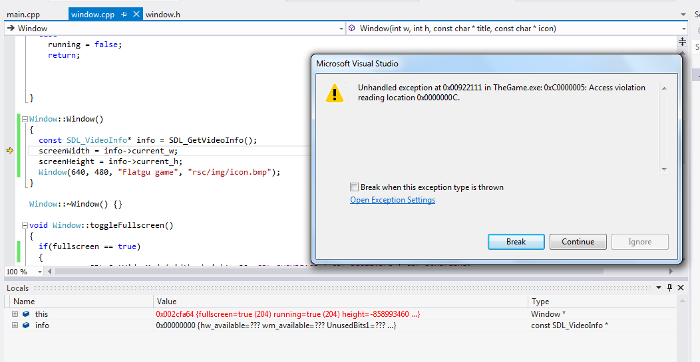

My code:
window.cpp
Window::Window(int w, int h, const char *title, const char *icon) { height = h; width = w; if(SDL_Init( SDL_INIT_EVERYTHING ) == 0) { SDL_WM_SetCaption(title, NULL); SDL_WM_SetIcon(SDL_LoadBMP(icon),NULL); screen = SDL_SetVideoMode(width, height, 32, SDL_SWSURFACE | SDL_RESIZABLE | SDL_DOUBLEBUF); if(screen == NULL) { running = false; return; } fullscreen = false; } else running = false; return; } Window::Window() { const SDL_VideoInfo* info = SDL_GetVideoInfo(); screenWidth = info->current_w; screenHeight = info->current_h; Window(640, 480, "Flatgu game", "rsc/img/icon.bmp"); }window.h
class Window { public: Window(); ~Window(); int getWidth() {return width;} int getHeight() {return height;} bool isFullscreen() {return fullscreen;} void toggleFullscreen(); private: Window(int w, int h, const char *title, const char *icon); bool fullscreen, running; int height, width, screenWidth, screenHeight; SDL_Surface *screen; };
It compiles fine, but then, after compiling, I'm getting this ugly error: 
What's the reason of my problem? Why do I get so weird numbers?
My aim is to store original screen resolution for further use (like toggling to fullscreen), and I have to do this before calling SDL_SetVideoMode(). That's why it is in the constructor.